Kaviareň a pražiareň
Kaviareň s vlastnou pražiarňou. Námestie slobody, v centre Vranova.
Z piknikov na námestie.
Prvé Nashe šálky sme varili na piknikoch v prírode — kamaráti tomu hovorili mobilná kaviareň. V októbri 2022 sme sa usadili v bývalej garáži na Námestí slobody.
Od začiatku sme chceli viac než len podávať kávu: miesto, kde sa stretávajú ľudia, ktorí majú radi dobrú kávu a pokojnú atmosféru.
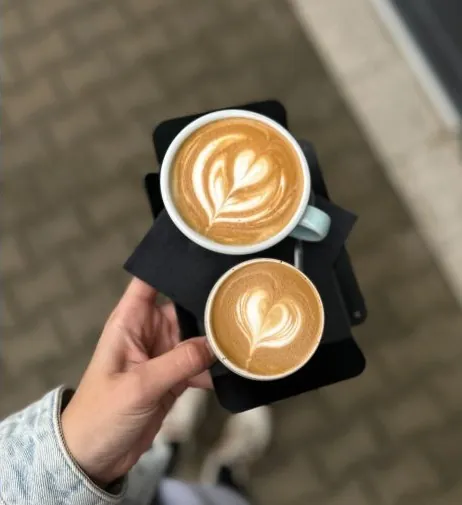
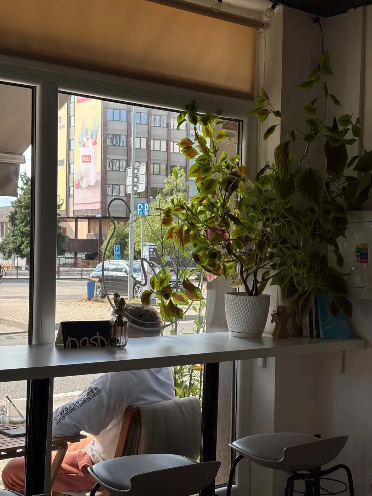
Prečo výberová káva?
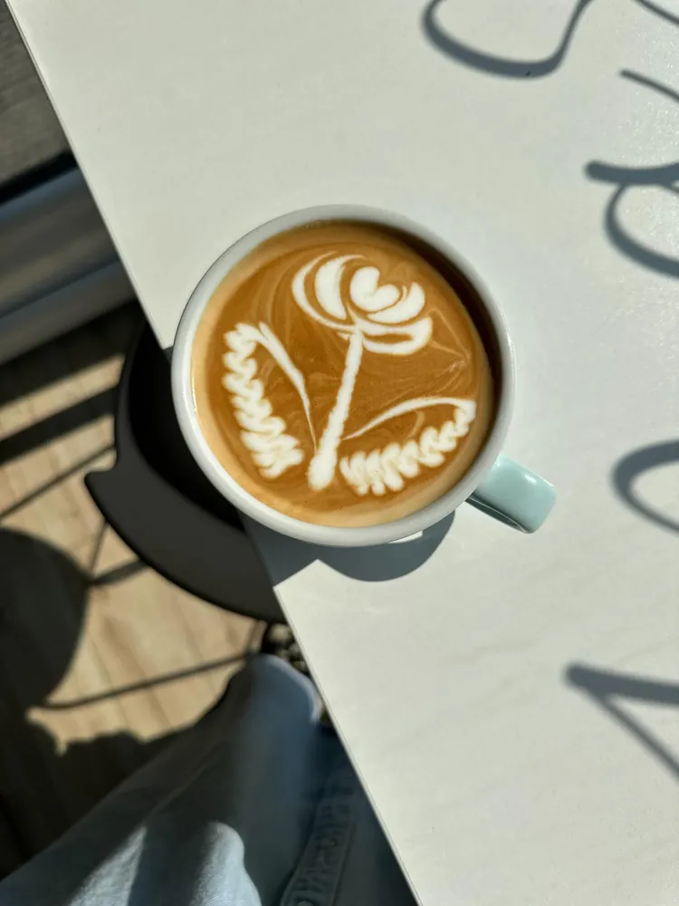
- KvalitaVýberová káva musí pri hodnotení podľa SCA získať aspoň 80 zo 100 bodov a vo vzorke zelených zŕn nesmie mať vážne chyby.
- FérovosťPestovatelia dostanú zaplatené za kvalitu, nie len za objem.
- ČerstvosťPražíme si sami, tu vo Vranove. Z pražiarne na bar za pár dní, nie za týždne.
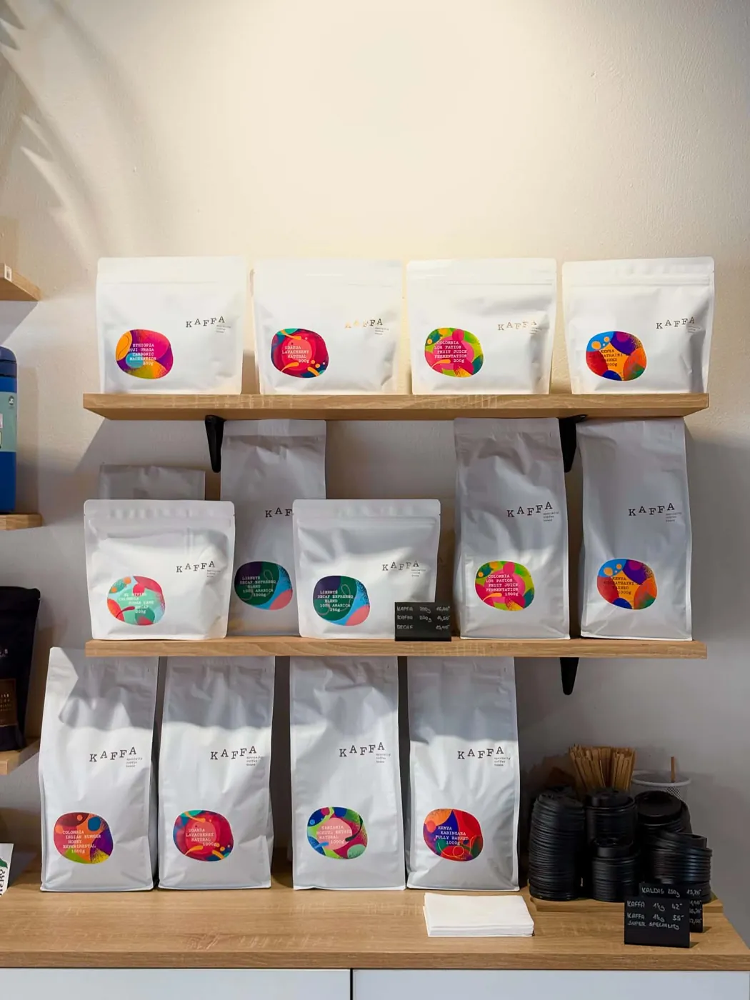
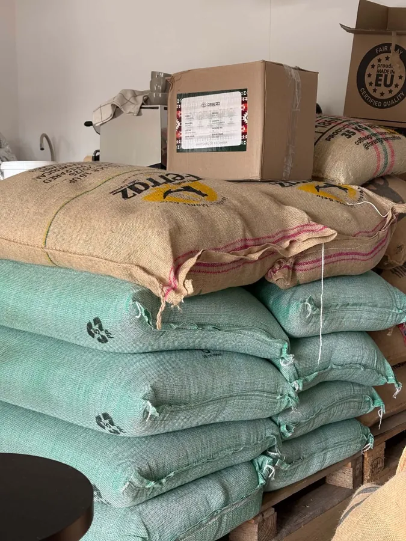
Kávu si pražíme sami.
Nasha je kaviareň s vlastnou pražiarňou. Všetko, čo u nás piješ, sme upražili tu vo Vranove — od espressa po filter.
Keď pražíme sami, máme pod kontrolou celú cestu od zeleného zrna po šálku: vyberáme kávy, ladíme praženie a hneď vidíme, ako chutia za barom.
Kúpiš len u nás na predajni
- Nasha blend 90/10
- Zmes z Brazílie, Guatemaly a Vietnamu: 90 % arabiky a 10 % robusty, ktorá pridá telo a hustejšiu cremu. Tmavšie praženie.
- Brazília
- 100 % arabika z jednej krajiny pôvodu. Tmavšie praženie.
- Sezónna výberovka
- Výberová káva, ktorú počas roka obmieňame.
Dva mlynčeky, jeden kávovar.
V prvom mlynčeku je náš Nasha blend 90/10 — tmavšie pražený, s plným telom a hustou cremou, ktorý sa dobre spojí s mliekom. Kúpiš ho aj u nás na predajni. V druhom sa striedajú svetlejšie pražené kávy jedného pôvodu, ovocnejšie a s výraznejšou kyslosťou. Ktorú si dáš, sa rozhodneš pri bare.
Espresso ťaháme na kávovare Faema President.
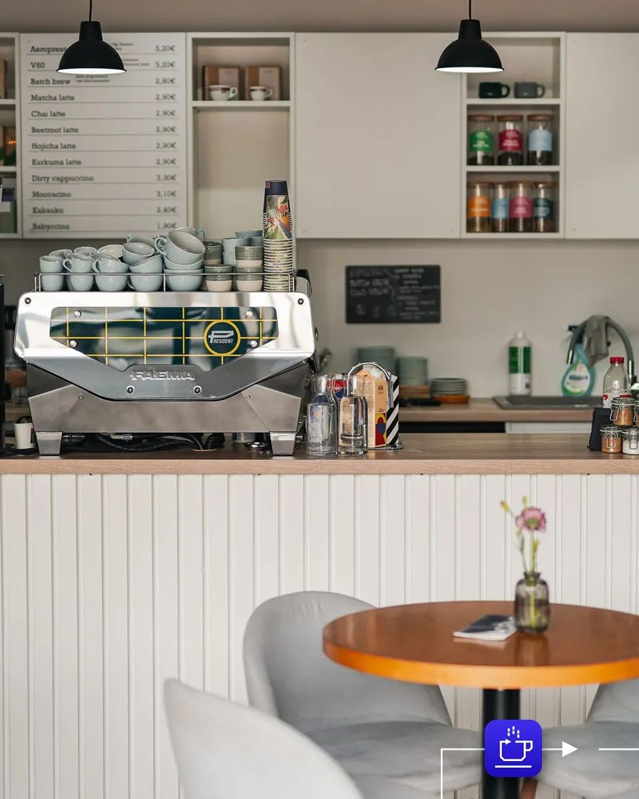
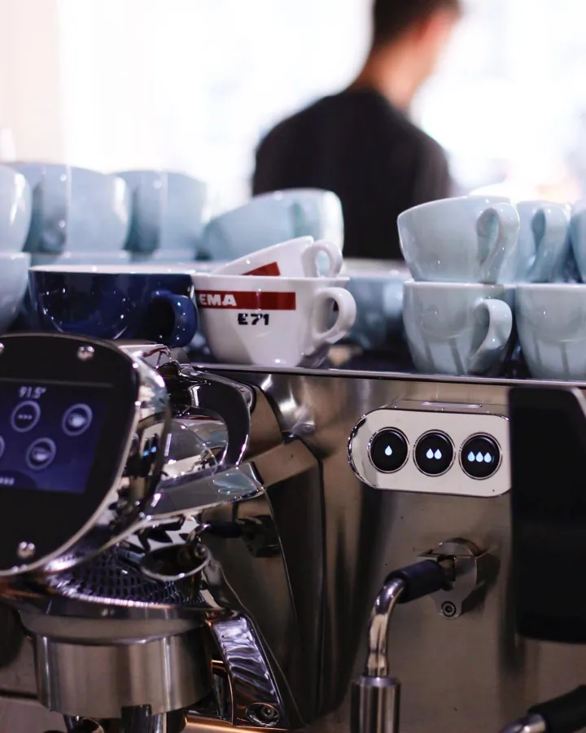
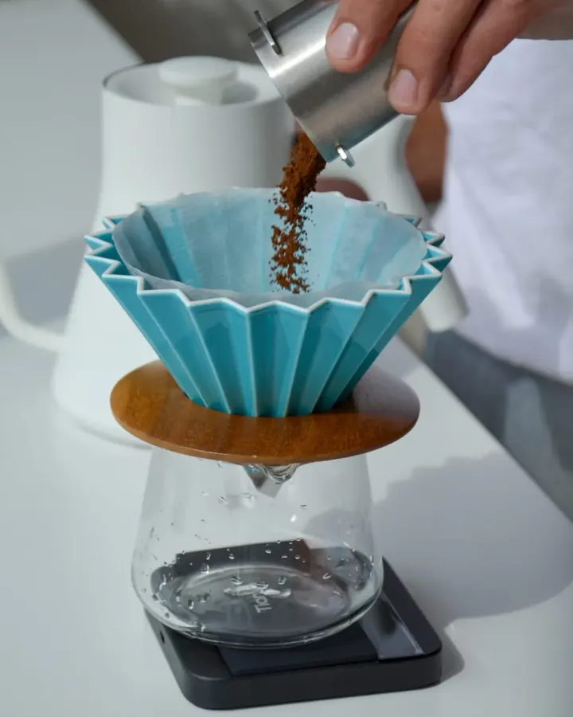
Filter zalievaný ručne.
V60 zalievame ručne v drippri Origami s kónickým filtrom, AeroPress pripravujeme z 18 g čerstvo namletej kávy. A každý deň máme čerstvý batch brew z Fellow Aiden — filter z tej istej výberovej kávy, hotový hneď.
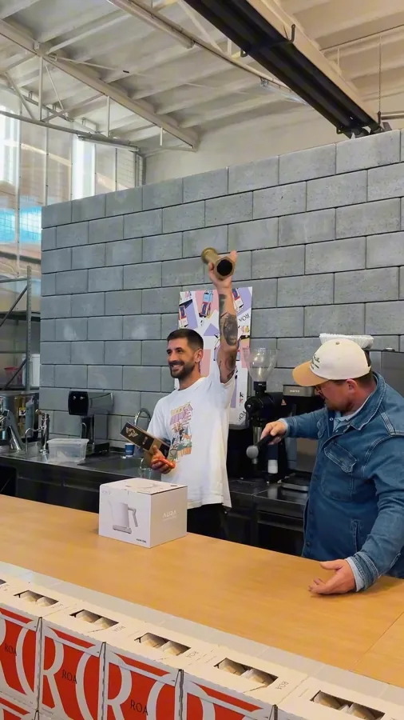
„Napätie vyvrcholilo záverečným finále, v ktorom sa stretli Matej Bíreš, Martin Karabinoš z pražiarne The Fleck a Peter Jurko z Kaffa. O poradí napokon rozhodla posledná séria pripravených šálok kávy.“
1. miesto – Peter Jurko
Zdroj: Alexandra Vroclavjaková, Kávičkári.sk, 4. 10. 2026 · Foto: Instagram @mareksvitek
Ku káve niečo sladké.
Koláče od lokálnych cukrárok.
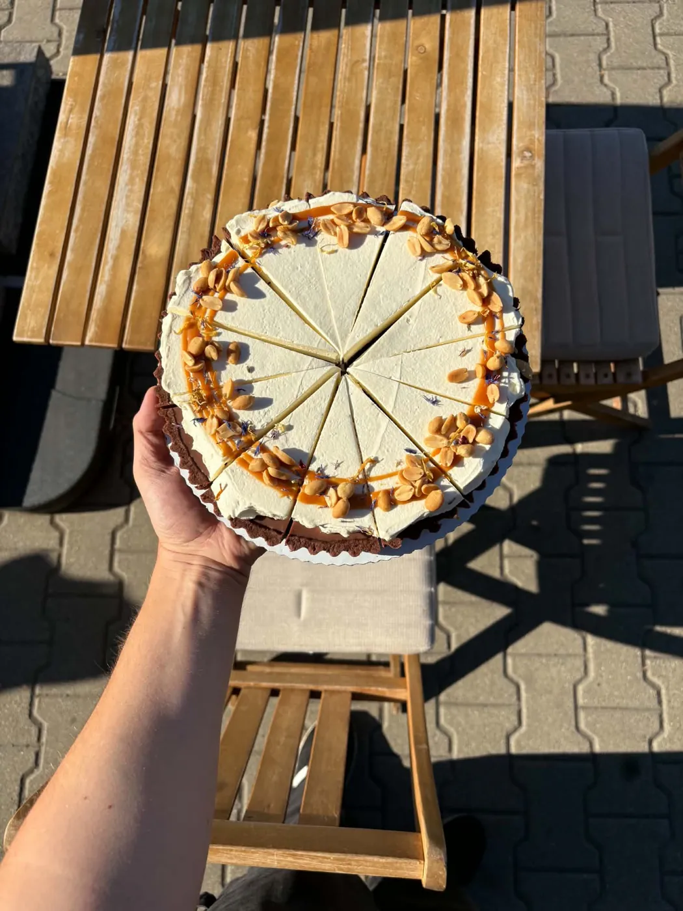
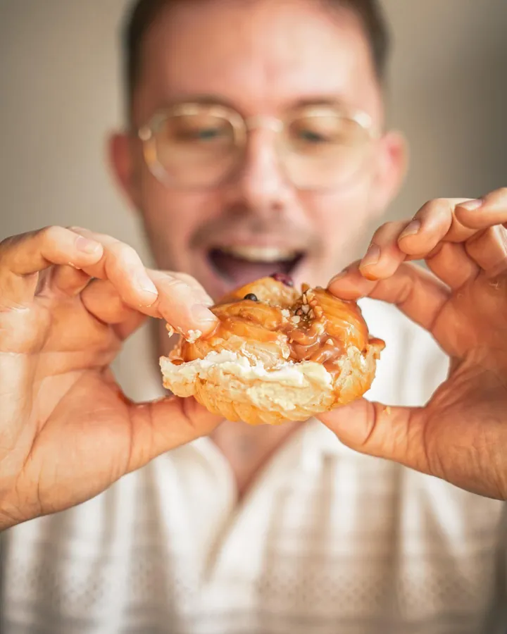
Sme Ivona a Peťo.
Spoznali sme sa pri práci s kávou a Nashu dnes vedieme spolu. Za barom s nami stojí náš tím baristov.
Občas u nás robíme cupping: ochutnávame niekoľko káv vedľa seba, tak ako ich hodnotia pražiari. Kedy bude ďalší, dáme vedieť na Instagrame.
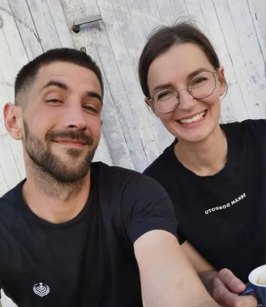
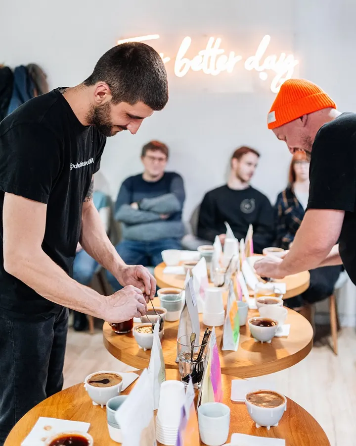
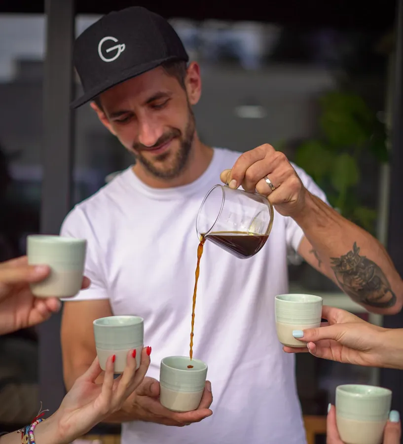